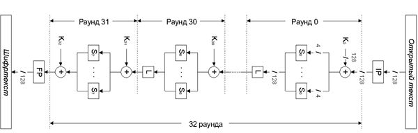

Алгоритм SERPENT разработан тремя известнейшими криптологами: Россом Андерсоном, Эли Бихамом и Ларсом Кнудсеном. Каждый из них знаменит своими криптоаналитическими работами, а также разработанными ранее алгоритмами шифрования (например, широкую известность получили алгоритмы Bear и Lion, разработанные Андерсоном и Бихамом не менее известен алгоритм Square, разработанный авторами алгоритма Rijndael Джоан Деймен и Винсентом Риджменом при участии Ларса Кнудсена). Именно Эли Бихама без преувеличения можно назвать величайшим крипто-аналитиком современности, его авторству (часто в соавторстве с другими специалистами) принадлежит множество работ, посвященных методам вскрытия различных известных алгоритмов шифрования.
Еще до конкурса AES появился алгоритм SERPENT-0, отличающийся от присланного на конкурс алгоритма SERPENT-1 (или просто Serpent) только тем, что в нем были использованы таблицы замен алгоритма DES (в незначительно модифицированном виде). В SERPENT используются уже оригинальные таблицы замен, которые, по словам его авторов, вкупе с незначительным изменением процедуры расширения ключа усилили алгоритм против дифференциального и линейного криптоанализа.
Алгоритм SERPENT представляет собой SP-сеть, в которой блок данных в процессе шифрования разбивается на 4 подблока по 32 бита (рис. 3.24).

Рис. 3.24. Структура алгоритма SERPENT
Алгоритм выполняет 32 раунда преобразований; перед первым раундом выполняется начальная перестановка IP, после заключительного раунда − финальная перестановка FP. Для перестановки IP характерно, что бит 0 остается на своем месте, бит 32 входного значения становится битом 1, бит 64 − битом 2 и т.д. Финальная перестановка является инверсной начальной перестановке.
Функция раунда состоит из следующих операций:
1. Наложение 128-битного ключа раунда побитовой логической операцией «исключающее или» (XOR).
2. Табличная замена. Обрабатываемый 128-битный блок данных разбивается на 32 фрагмента по 4 бита, над каждым из которых выполняется табличная замена 4 * 4 бит. Полученный результат объединяется обратно в 128-битный блок.
В каждом раунде используется одна и та же таблица; всего же в алгоритме определены 8 таблиц замен S0...S7, которые циклически используются в 32 раундах шифрования:
Ячейки таблицы содержат выходные значения; входное значение определяет требуемый номер столбца. Например, таблица S0 меняет 0 на 3, 1 на 8 и т.д.
Таблицы замен алгоритма Serpent определенным образом сгенерированы из таблиц алгоритма DES.
Линейное преобразование блока данных определяется таблицей, фрагмент которой представлен далее.
Таблица 3.5 |
|||
Линейное преобразование блока данных |
|||
16, 52, 56, 70, 83, 94, 105 |
72, 114, 125 |
2, 9, 15, 30, 76, 84, 126 |
36, 90, 103 |
20, 56, 60, 74, 87, 98, 109 |
1, 76, 118 |
2, 6, 13, 19, 34, 80, 88 |
40, 94, 107 |
24, 60, 64, 78, 91, 102, 113 |
5, 80, 122 |
6, 10, 17, 23, 38, 84, 92 |
44, 98, 111 |
28, 64, 68, 82, 95, 106, 117 |
9, 84, 126 |
10, 14, 21, 27, 42, 88, 96 |
48, 102, 115 |
Каждая ячейка таблицы соответствует биту выходного значения (от 0 до 127); в ячейке перечислены входные биты, XOR которых дает выходное значение.
Расшифрование производится выполнением обратных операций в обратной последовательности. В частности, вместо таблиц замен S0...S7 применяются в обратной последовательности инверсные таблицы замен InvS0...InvS7:
Аналогичным образом вместо «прямого» линейного преобразования используется обратное, которое определяется табл. 3.6 (принцип действия обратного преобразования аналогичен прямому и описан выше).
Таблица 3.6 |
|||
Обратное преобразование блока данных |
|||
53, 55, 72 |
1, 5, 20, 90 |
15, 102 |
3, 31, 90 |
57, 59, 76 |
5, 9, 24, 94 |
19, 106 |
7, 35, 94 |
61, 63, 80 |
9, 13, 28, 98 |
23, 110 |
11, 39, 98 |
65, 67, 84 |
13,17, 32, 102 |
27, 114 |
1, 3, 15, 20, 43, 102 |